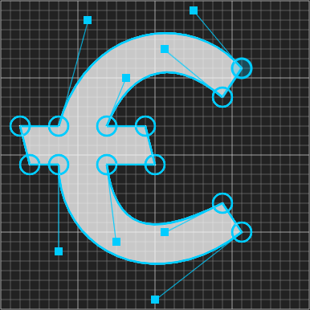

Les 8
Paths
Anatomie van Path tag
De meest krachtige vorm die je in SVG hebt is Path. Maar het is ook direct de moeilijkste.
Je beschrijft een vorm met een reeks letters en cijfers (de 'data', d="..."). Iedere letter is een commando, ieder cijfer is een coordinaat.
Het is het makkelijkste om te denken aan een pen, die je over het canvas beweegt.
Dit is het makkelijkste voorbeeld. Het feit dat de letters HOOFDLETTERS zijn, betekent, dat de coordinaten (x en y) absoluut zijn. Gebruik je een kleine letter, dan is het relatief ten opzichte van het vorige coordinaat. Goed gebruik hiervan geeft een kleinere string, maar ik zou je aanraden om te beginnen met absoluut, dus hoofdletters, anders is het makkelijk om in de war te raken. Verplaats maar eens het eerste punt in dit voorbeeld:
Zoals je ziet, kun je de data (d) zo lang maken als je zelf wilt, je kunt dus in 1x meerdere strepen en vormen zetten. Wel hebben ze allemaal dezelfde kleur, stroke en laag (het is één vorm)
Andere commando's en interactieve voorbeelden
M = moveto
L = lineto
H = horizontal lineto
V = vertical lineto
Dit is het zelfde als L(line), maar met 1 coordinaat of in de x richting H(Horizontal) of y richting V(Vertical)
C = curveto
C staat voor een (Bézier) curve. Deze soort curve heeft twee eindpunten en twee control points, die samen het verloop van de curve bepalen. Vertrekpunt van de curve is de plaats van de pen, de pen vertrekt in de richting van het eerste controlpoint en komt aan op het eindpunt vanuit de richting van het tweede controlpoint.
S = smooth curveto
Een Smooth (Bézier) curve, deze twee eindpunten en een control point, het eerste controlpoint wordt bepaald door het laatste controlpoint van de C (curve) ervoor. Daardoor is hij smooth, omdat de curve in dezelfde richting vertrekt, als hij aankomt (Deze kun je dus alleen gebruiken na een C)
Q = quadratic Bézier curve
Een Quadratic (Bézier) curve, is een speciale variant van een Bézier Curve (c), de twee controlpoints van de Béziercurve vallen samen. Daarom heeft deze vorm van de curve maar 1 controlpoint.
T = smooth quadratic Bézier curveto
Een Smooth Quadratic (Bézier) curve, is een smooth versie van de Quadratic Bézier curve. Het ene controlpoint wordt bepaald door het laatste controlpoint van de voorgaande curve. (Deze kun je dus alleen gebruiken na een Q).
Z = closepath
A = elliptical Arc
OPDRACHT

Hint: Je kunt het grid gebruiken om de control points af te lezen. De grotere hokken zijn in 8x8 kleinere hokjes verdeelt. 25,7 zijn de coordinaten van het punt rechts boven.